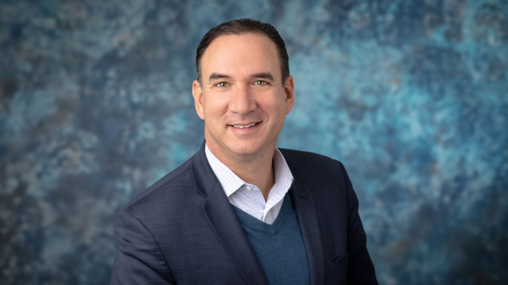
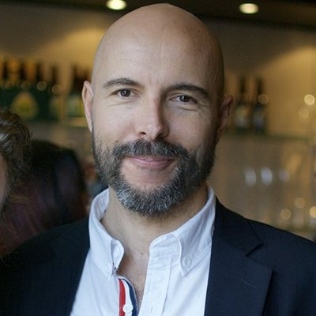

Andrew's the best facilitator I've seen.
I'm an Atlanta-based strategy consultant who facilitates executive workshops and offsites. 18+ years across private, public, and nonprofit sectors. Hundreds of sessions.
At Deloitte, I ran the ThinkTank Center of Excellence, training facilitators and building the playbook for technology-enhanced collaboration. I then became a Lab Manager in the Greenhouse, Deloitte's purpose-built immersive environment where teams tackle their hardest problems through behavioral science, environmental design, and structured creative problem-solving. I've been doing the same work independently since, for organizations of every size, from the U.S. State Department to community nonprofits.
Imagine a boring "strategic offsite," and now imagine how great it would be if it had gone as well as possible. That's what I do.
My style is warm, structured, and honest. I keep the room moving, and I surface the thing everyone is thinking but nobody wants to say.
Organizations hire facilitators for what looks like a process problem: "we need a strategic plan" or "we need team alignment." But the real challenge is almost always messier than that. It's open-ended, politically charged, and full of things nobody wants to say out loud.
We spend most of our meetings figuring out what everyone thinks, and leave almost no time to figure out what to do about it. A well-designed session flips that ratio. By downloading the brain of the group quickly, you free up the meeting for what matters: implications, choices, and commitments.
I design sessions to create the conditions where a group can do the hard thinking together that they can't do on their own.
Sessions range from half-day workshops to multi-day retreats. Here are the most common shapes.
Multi-day facilitated processes that produce real strategic plans with priorities, timelines, and accountability. Like the ToolBank engagement that culminated in a 5-year plan presented to the full board.
Structured time away from the office that's productive. Board alignment, governance, long-range planning. Sessions designed so the group leaves with clarity, not just good feelings.
"Bridge building" work for teams that need to rebuild trust, align on direction, or resolve tensions that are quietly draining energy.
High-stakes gatherings with diverse interests at the table. I keep the conversation honest and productive when the room has competing agendas.
Large-group sessions that need to be energizing. Interactive formats, real outcomes, and exercises that get every voice in the room.
When a growing organization needs to rethink governance, accountability, and role definitions for what comes next.
Most engagements are groups of 8–60 people, though I've facilitated sessions with 450.
Sessions alternate between "heads down" and "heads up." In heads-down mode, everyone contributes simultaneously: typing ideas, voting on priorities, responding to prompts. In heads-up mode, we explore what the group just revealed. This rhythm downloads the group's thinking fast, so we spend time on implications and decisions instead of just figuring out what everyone thinks.
I set the scene with intention. Play-Doh on the tables. Music as people walk in. Ground rules the group creates together. The physical environment shapes how people think and interact, and I design for that.
And I name the thing. If there's an elephant in the room, a political dynamic everyone is tiptoeing around, or a gap between what the sponsor believes and what the room actually feels, I surface it. That's not a risk to the session. It's the reason for the session.
A few examples of what this looks like in practice.
U.S. State Department
Organizational redesign • 6-day engagement • 30 senior leaders
Deloitte leaders were asked to help 30 senior leaders and diplomats redesign their organization. They tapped me to lead, design, and facilitate the entire process. The first two days were rough: limited client access, competing direction from stakeholders, and a room full of people with decades of institutional knowledge and strong opinions. I pivoted the design mid-session, brought energy and creativity into a process that was losing momentum, and helped the group produce a unified organizational design by week's end.
WellPoint / Anthem
Strategy lab • 3-day engagement • 32 senior executives
Convened 32 senior healthcare executives to learn about disruptive industry trends and develop strategic choices. The result: WellPoint's leadership bought into the need for a strategy rethink and hired Deloitte to build and run an innovation studio.
ToolBank USA
Intermittent engagements • 2016–2024
Started with a one-day "bridge building" session to rebuild trust between HQ and a national affiliate network. Pre-session interviews revealed deep frustration. The session surfaced those tensions, gave the new CEO honest input, and helped put the organization back on solid footing. Returned in 2024 to lead a multi-month strategic planning effort culminating in a 5-year plan with KPIs, presented to the full board for a vote.
Ma'alot Atlanta
Organizational design sessions • 2025
A growing Atlanta Jewish community organization needed to redesign its governance as it scaled. Facilitated a series of organizational design sessions that brought diverse stakeholders into alignment on structure, accountability, and role definitions for the next chapter.
Also: Deloitte Board/ExCo annual strategy retreats (40+ senior partners, including the CEO) • Emory & Brown alumni board sessions & facilitator training workshops
Incredible facilitation job. Everyone enjoyed the two days. Variety of activities. Flexible. Getting everyone's voice heard. And leaving with real consensus-driven next steps.

Andrew is insanely good at this. The way he facilitates people is incredible. Superb.

Andrew has a natural gift for making people feel welcomed and at ease. I enjoyed working with him.
Thanks again for your moderating brilliance. While the meeting went really differently from how I expected, it got us all thinking about some underlying issues whose resolution will make it much easier to conduct our business.
Andrew has mastery of his tools and executive presence facilitating a group of our most senior partners.
Every session is custom-designed. I learn your organization, talk to the people who matter, and build a session around what will actually change things. What stays constant is the process underneath.
Facilitation is a lot like standup comedy: you script everything ahead of time, you expect the laughs, and you care deeply about the groaners.
I start with the sponsor and key stakeholders. What's the real challenge? What are the dynamics in the room, the history of past attempts, the things nobody wants to say out loud? I ask the questions most facilitators don't.
80% of a great session happens before anyone walks in the room. I work backwards from the session date, designing a flow that alternates between divergent thinking and convergent decisions. Every activity earns its place on the agenda. I underpack rather than overpack, because no one complains if you end early, and everyone hates it when it's rushed.
In the room, I manage energy, not time. I get every voice heard in the first five minutes, keep the conversation honest, and adapt the plan when the room tells me something more important is happening.
You have 100% power to act on session outcomes the day they happen. A day later, 50%. A week later, 5%. Every session ends with named owners and deadlines, not "let's circle back."
The group is never as aligned as the sponsor assumes. "We're mostly on the same page" is almost never right. A good session accounts for that gap instead of being surprised by it.
Go slow to go fast. The urge to cram the agenda is the single biggest threat to a useful session. Fewer topics explored deeply always beats a packed schedule where nothing lands.
The enemy is twofold: politeness and abstraction. Polite groups avoid the real issue. Abstract groups think they agree when they don't. Good facilitation makes things concrete and honest.
The conversation in the last hour reveals what the session should have been about. That's why adaptability matters more than a perfect plan. A practiced facilitator pivots in real time.
Every engagement is custom-designed. Book a 30-minute call and we'll talk through your situation. No pitch, no deck.
Book a free planning call →MBA from Emory (Woodruff Scholar), mechanical engineering from Brown. Atlanta native. I've taught workshop facilitation to other facilitators and non-dualistic mindfulness to people who need a break from workshops. I enjoy meditation, cocktails, and travel—sometimes all at once.